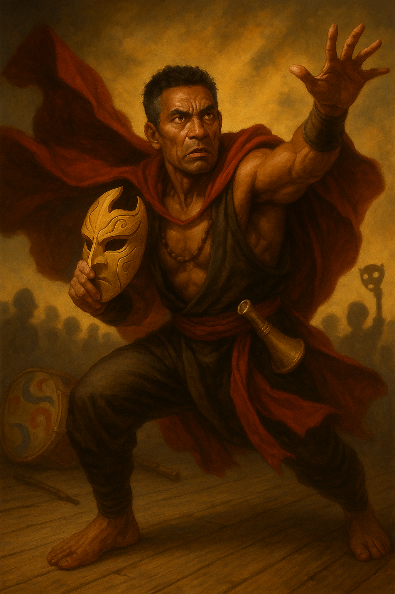

Calypso "So-So" Sonder¶

"Witness the Apocalypso! A thousand suns blaze, and you stand in their shadow!"
Character Overview¶
| Class & Level | Monk (Way of the Open Hand) 4 |
| Background | Entertainer |
| Race | Human |
| Alignment | Lawful Good |
| Role | Martial performer, striker, party morale engine |
Calypso “So-So” Sonder is the last noble practitioner of the Opera of the Open Hand — a theatrical combat tradition blending kabuki poses, lucha libre bombast and crowd pleasing, haka ceremonial ferocity, and the acrobatic prowess of Chinese opera. Once chanted to glory by roaring crowds, So-So now wanders as an aging showman, cloak billowing, mask gleaming, knees aching. He fights like a performer because for him, combat is theatre: a chance to inspire, to teach, and to embody the noblest aspirations of humanity. Unfortunately, aspirations don't draw big crowds anymore.
⚠️Contains home-brew: Suggestions for Opera Flourishes in combat.
Stat Snapshot¶
STR 10 (+0) DEX 18 (+4) CON 12 (+1)
INT 8 (-1) WIS 14 (+2) CHA 14 (+2)
HP 35 AC 14 Speed 40 ft
Proficiency Bonus +2
Focus Points 4 Save DC 12
Personality¶
- Aging performer haunted by his own legend
- Campy and theatrical, but deeply noble at heart
- Balances slapstick comedy with mythic gravitas
- Struggles with fading glory and the question of legacy
- Most likely party member to suplex a train
PDF Character Sheet¶
📄 Download full character sheet
Gameplay Notes¶
Playing Calypso So-So Sonder effectively
- Treat combat as performance: choose dramatic times to narrate strikes as choreography, from dramatic sweeps to shouted finishers.
- So-So fully believes that a perfect embodiment of noble drama can change the world by kindling a fire in the hearts of the masses.
- Share the spotlight: frame allies’ actions as part of your “performance”. In the acrobatic, improvised and musical stageplay of the Opera of the Open Hand, being attuned to your fellow martial artists is crucial.
- Outside combat, lean into his Entertainer background: music, painting, storytelling, even slapstick to delight children and smallfolk.
DM Guidance
- So-So tilts the table toward theatrical tone. Ensure the group is on board with operatic flair before introducing him.
- His CHA investment makes him weaker than optimized monks; consider homebrew (Opera Flourishes, CHA synergy as laid out in his character sheet) to keep him competitive without overshadowing others.
- Use his ageing and melancholy as pathos hooks: rival troupes, the Iron Tusks-style enemies of Geldok, or the fading of his art form can all test him.